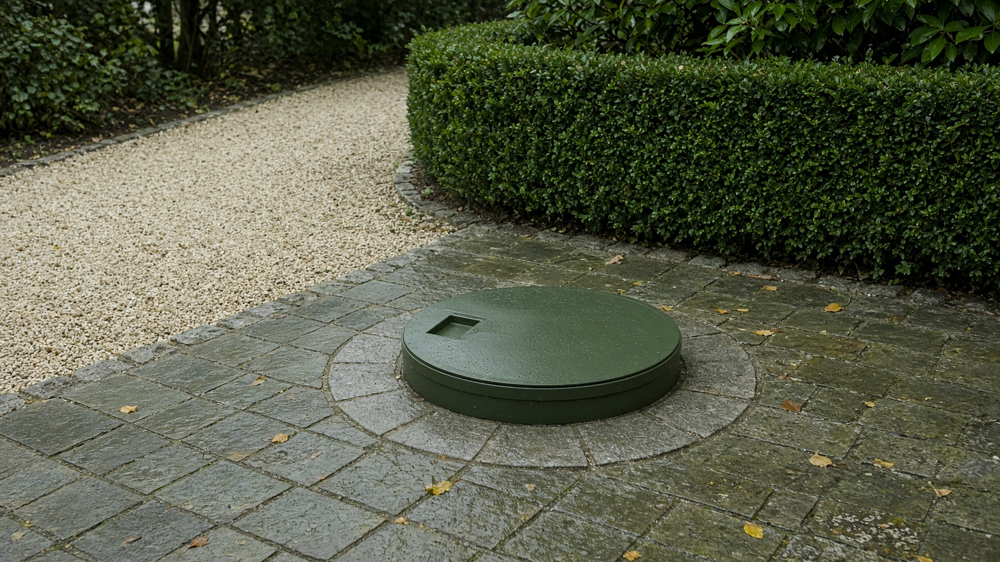
Manuál identity
ServisDešťovek
Čištění nádrží na dešťovou vodu. Morava a Slezsko.
01 — Značka
O kom to je
ServisDešťovek čistí podzemní nádrž, filtry a čerpadlo. Zákazník už vodu má. My ji vrátíme do stavu, ve kterém ji zahrada a dům znovu použijí.
| Název | ServisDešťovek. Vždy takto, s velkým D uprostřed. Nikdy „Dešťovka servis“ — to je jiná firma. |
|---|---|
| Doména | servisdestovek.cz |
| Území | Morava a Slezsko, základna Ostrava. |
| Tón | Klidný, krátký, konkrétní. Žádné výkřiky, slevy v procentech ani „nejlepší na trhu“. |
Říkáme
nádrž, dešťová voda, filtr, čerpadlo, čistá voda, Morava a Slezsko.
Neříkáme
kal, fekálie, špína, „jak to děláme krok za krokem“, před a po s bahnem. Práce se zákazníkovi neukazuje. Ukazuje se výsledek: voda, zahrada, poklop, klid.
02 — Slogan
Dvě věty, dvě role
Nepřidává se třetí slogan. Když je málo místa, zůstane jen umělecký a doména.
03 — Logo
Tři podoby
Značka je kapka jedním tahem. Text je jméno. Dohromady jsou první volba. Samotná kapka je na profil, favicon a malé plochy. Samotný text jen tam, kde se značka nevejde.
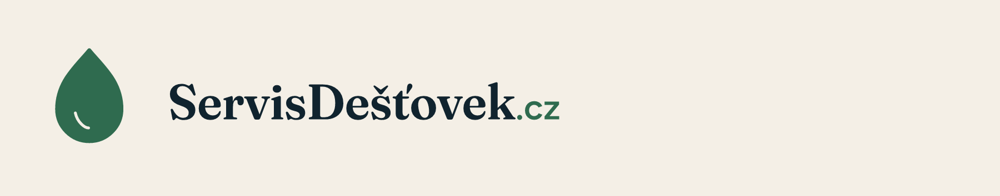
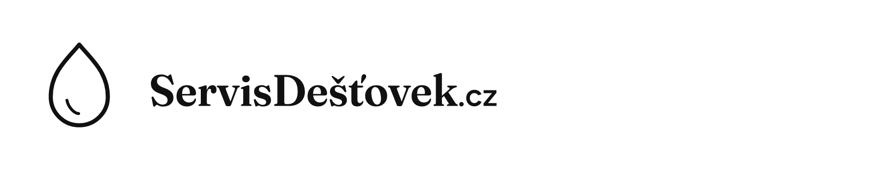
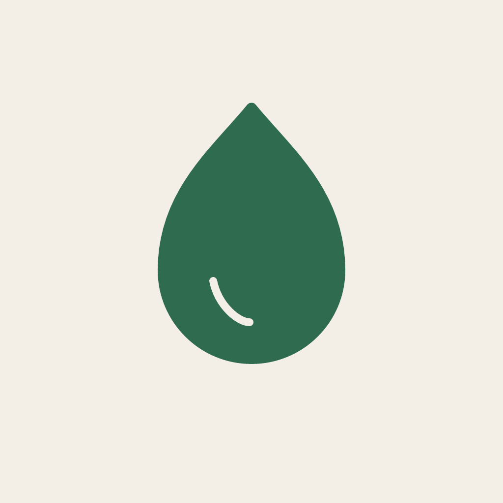
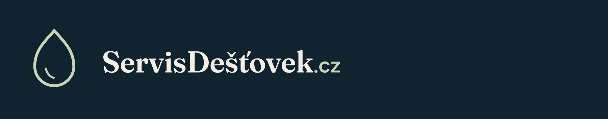
Ochranná zóna a velikost
Kolem loga nechávejte prázdno aspoň o šířce kapky. Do zóny nepatří text, fotka ani okraj formátu. Kombinované logo nepoužívejte užší než 140 px na obrazovce a 32 mm v tisku. Samotná kapka ne pod 24 px.
Podklady
- Krém
#F4EFE6, bílý papír, inkoust#10232E. - Na fotografii jen přes souvislý pruh v krému nebo inkoustu. Kapka se nepokládá přímo do trávy.
Co se nedělá
- Neměnit barvy, nepřidávat stín, obrys, přechod ani otáčení.
- Nedeformovat. Když se nevejde, použije se kratší verze, ne zúžená.
- Nepřepisovat jméno na verzálky ani na „Dešťovka servis“.
- Nedávat kapku do kruhu, erbu ani na cizí ikonu.
Průhledné verze pro skládání jsou soubory s příponou -pruhledne.png.
04 — Barvy
Šest barev, dvě nosné
Nosné jsou inkoust a zeleň. Krém je podklad. Mech je jen linka na tmavé ploše a jemný doplněk. Červená z webu do značky nepatří, je jen pro chybu ve formuláři.
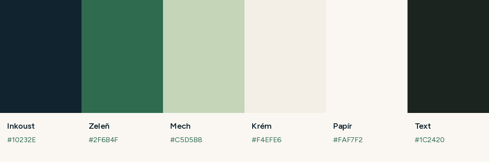
| Inkoust | #10232E · RGB 16, 35, 46 · tisk cca CMYK 65, 24, 0, 82. Podklad, text na krému se píše spíš barvou Text. |
|---|---|
| Zeleň | #2F6B4F · RGB 47, 107, 79 · CMYK 56, 0, 26, 58. Kapka, odkazy, koncovka .cz. |
| Mech | #C5D5B8 · RGB 197, 213, 184 · CMYK 7, 0, 14, 17. Linka loga na inkoustu, druhý řádek na fotce. |
| Krém | #F4EFE6 · RGB 244, 239, 230. Hlavní podklad loga a karet. |
| Papír | #FAF7F2 · RGB 250, 247, 242. Pozadí stránky, o odstín světlejší než krém. |
| Text | #1C2420 · RGB 28, 36, 32. Běžné odstavce. |
CMYK je přepočet pro orientaci tiskárny, ne nátisk. Na látku a razítko se bere černá obrysová verze.
05 — Písmo
Fraunces a Figtree
Jméno, titulky a slogany jsou Fraunces. Všechno ostatní je Figtree. Třetí písmo se nezavádí.
Čistá voda, kterou už máte.
Vyčistíme nádrž, filtry i čerpadlo. Morava a Slezsko.
| Fraunces | Názvy a velké věty. V logu je řez odpovídající váze 620, měkký, bez ozdobného wonk. Na webu se bere z Google Fonts, soubor je fonts/Fraunces-Display.ttf. |
|---|---|
| Figtree | Text, tlačítka, bio, popisky. Regular na odstavce, Semibold na krátké štítky. fonts/Figtree-Regular.ttf a Figtree-Semibold.ttf. |
| Na webu | Stejná dvojice. Nadpisy Fraunces, rozhraní Figtree. Čísla faktur můžou zůstat v IBM Plex Mono, do plakátu se nepřenáší. |
Obě rodiny jsou volně k užití (SIL Open Font License). Ke stažení i na fonts.google.com, vzory Fraunces a Figtree.
06 — Obraz
Co se fotí
Zahrada po dešti, poklop nádrže v trávě nebo ve štěrku, čistá voda, jedna kapka. Světlo je zatažené, barvy tlumené, nikdo se nedívá do objektivu. Žádné bahno, hadice v akci, montérky v detailu ani úsměv s palcem nahoru.
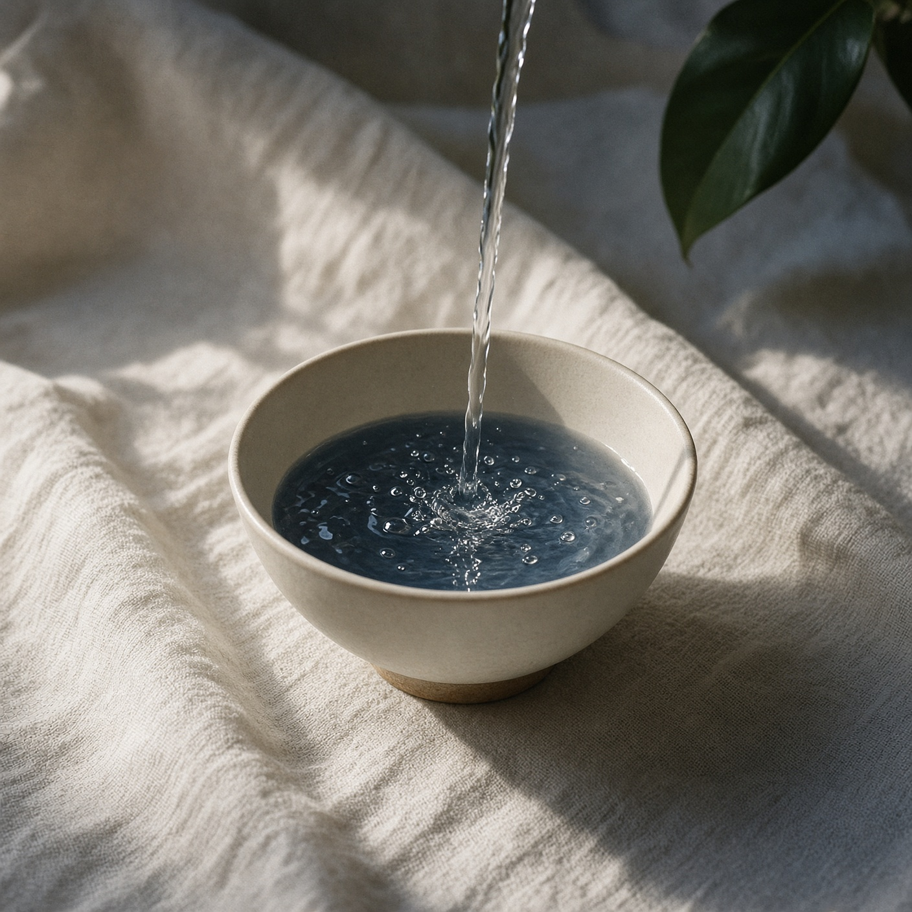
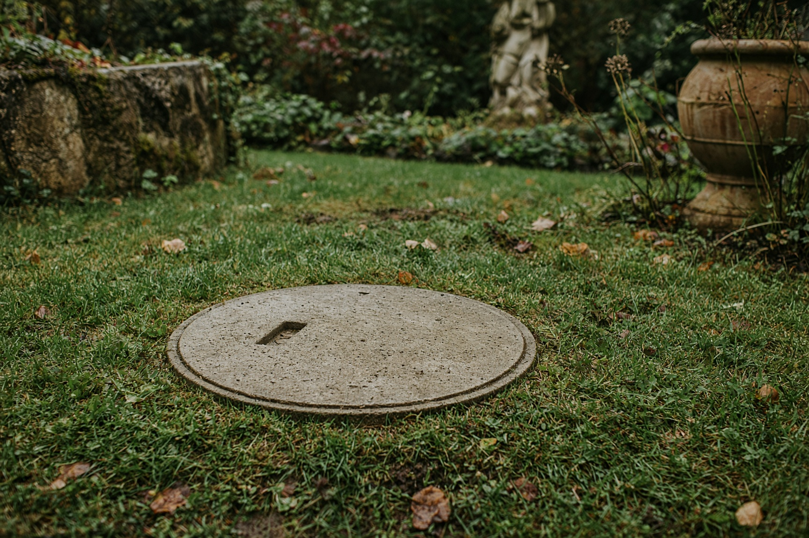
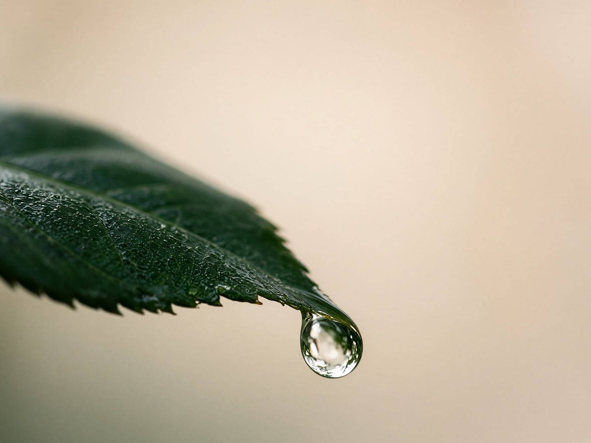
Na fotku se logo dává jen do pruhu. Titulek je krátký, maximálně dva řádky Fraunces. Když věta nestačí, patří tam faktický slogan, ne odstavec.
07 — Sítě
Jedno jméno všude
| Jméno profilu | ServisDešťovek |
|---|---|
| Handle | servisdestovek |
| Odkaz | https://servisdestovek.cz |
| Bio | Čištění nádrží na dešťovou vodu. Nádrž, filtry i čerpadlo. Morava a Slezsko. |
| Profilová fotka | Jen kapka na zeleni. site/profil-1080.png |
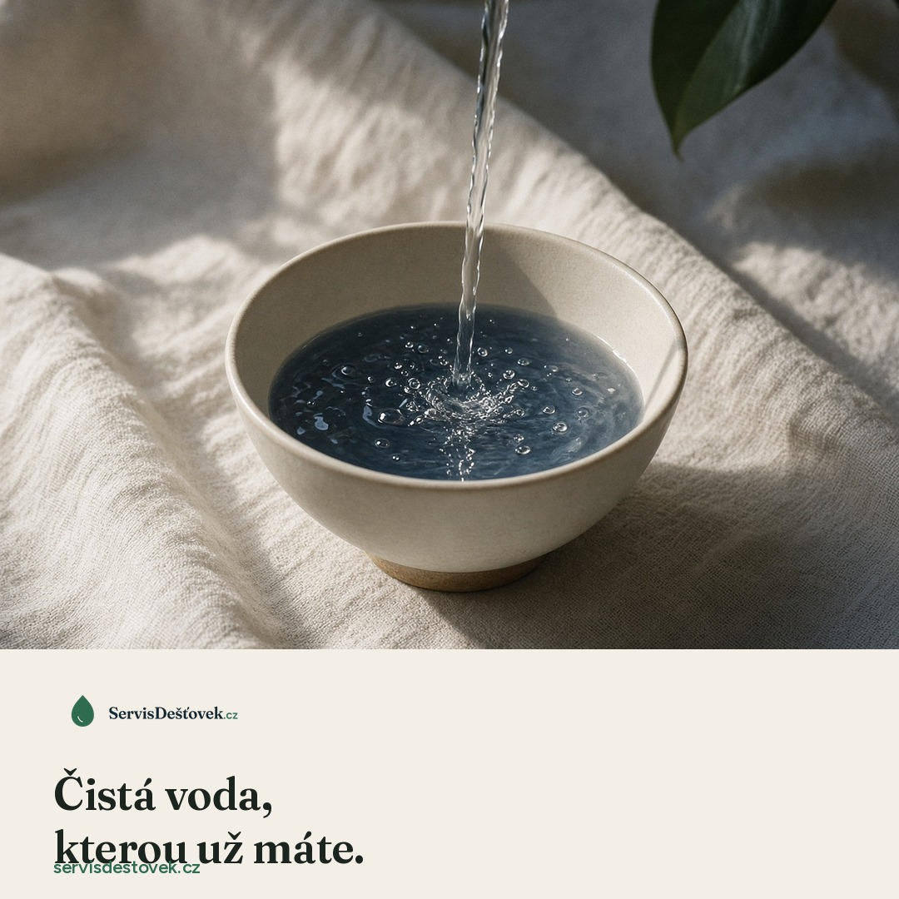
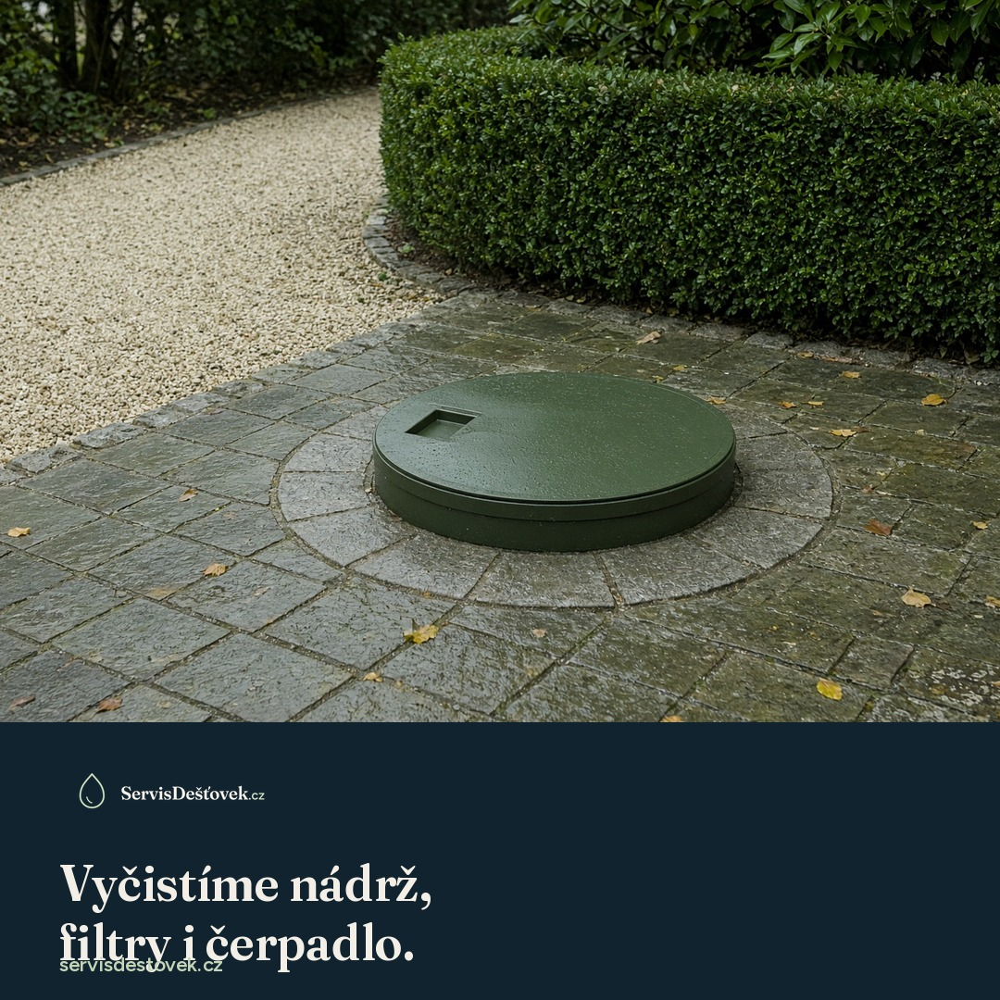
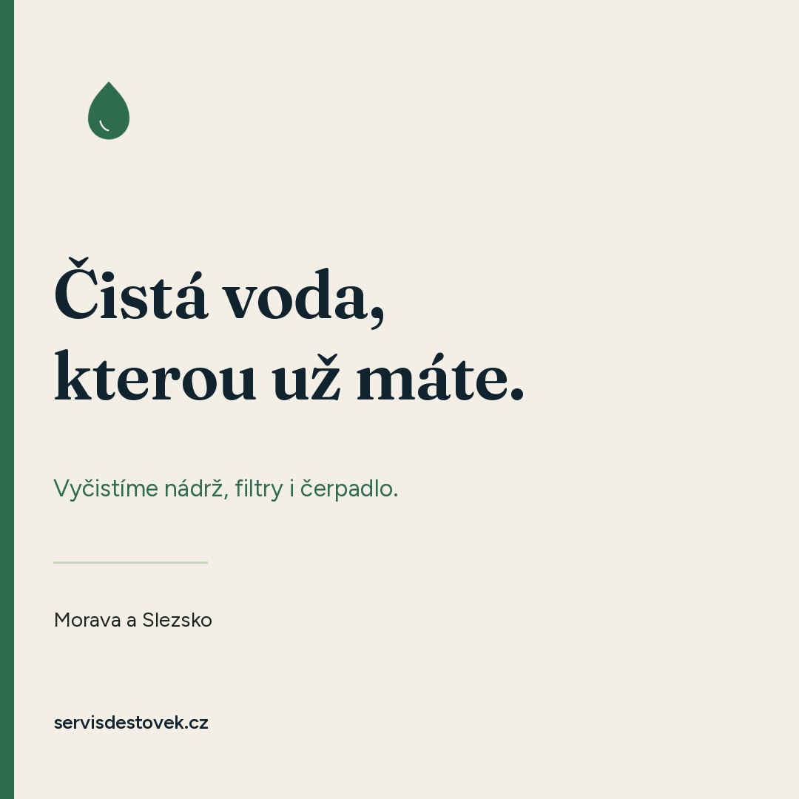
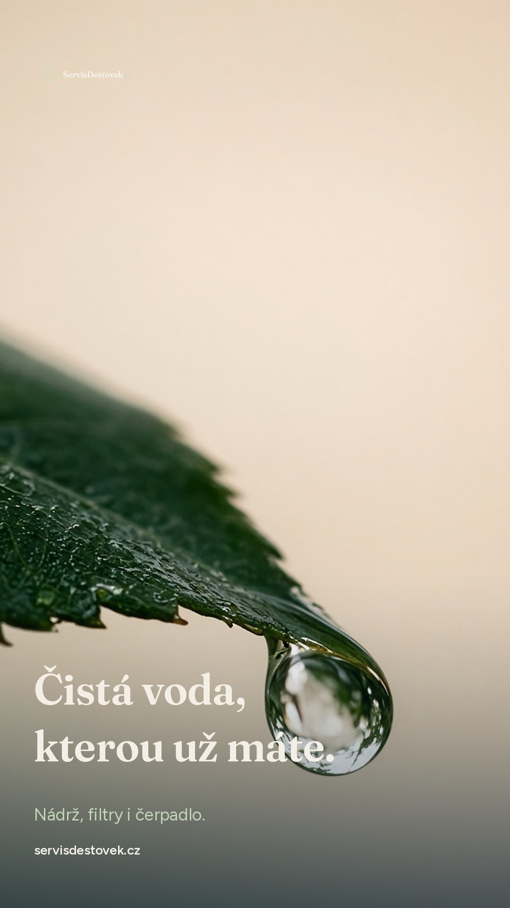
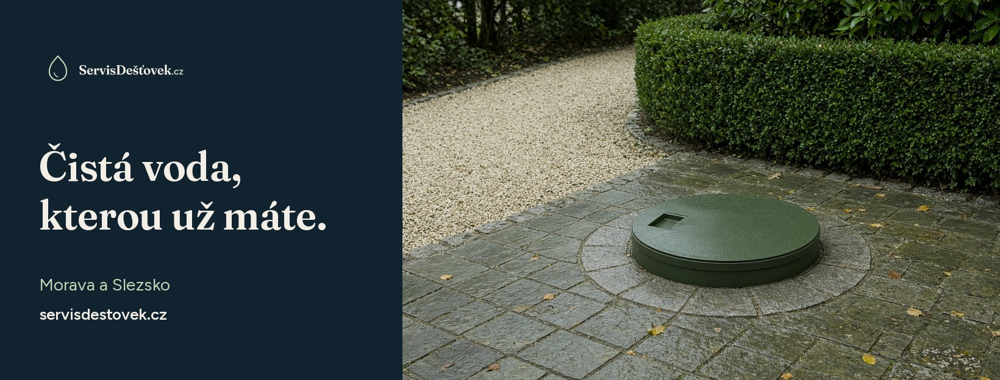
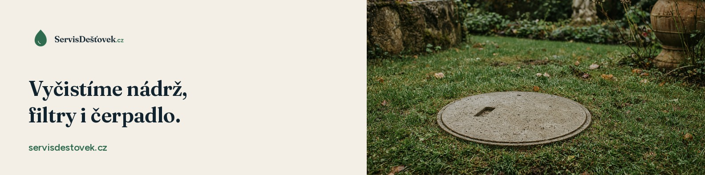
Popisek pod příspěvkem je jedna nebo dvě věty. První je slogan, druhá je území nebo doména. Hashtagy nanejvýš tři: #destovavoda #nadrz #servisdestovek. Bez výčtu práce a bez ceníku v obrázku.
08 — Soubory
Co je v balíku
| manual.html | Tento manuál. Otevře se v prohlížeči, písma bere ze složky fonts. |
|---|---|
| logo/ | SVG a PNG. Barva, černobílá, tmavá, favicon, průhledné verze. |
| site/ | Profil, příspěvky, story, covery, vzorník. |
| foto/ | Čtyři předlohy obrazu. |
| fonts/ | Fraunces a Figtree k instalaci. |
Jméno ServisDešťovek s.r.o. v ARES k 11. 11. 2026 nebylo. Aktivní je ale Dešťovka servis s.r.o., IČO 09568450. Před zápisem nechat název posoudit. Záložní firma se stejnou značkou navenku: ServisDešťovek Morava s.r.o.